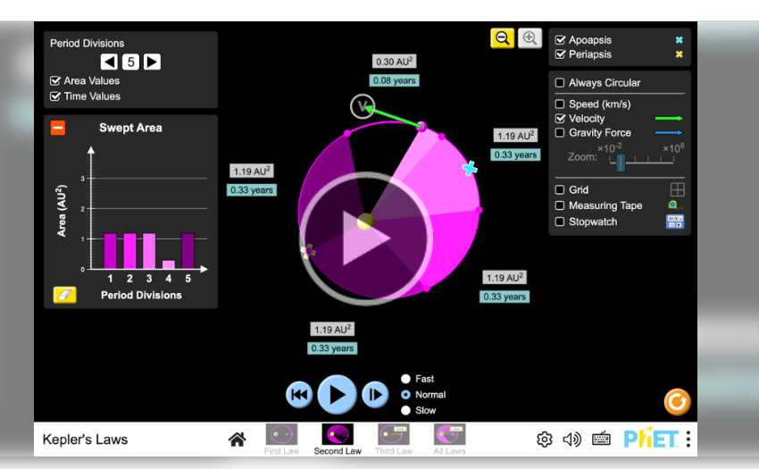
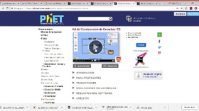

1
Unidad VI: Gravitación Universal, “Fuerza que impulsa y sostiene al universo”
Contenido: Ley de Kepler
Título de la unidad: ¿Cómo saben los planetas por dónde viajar?
2
Justificación
El estudio de las Leyes de Kepler es importante dentro de la asignatura de Física porque permite a los estudiantes comprender cómo se produce el movimiento de los planetas y qué principios explican sus órbitas. Su abordaje favorece el desarrollo de aprendizajes científicos mediante la observación, el análisis y la interpretación de fenómenos relacionados con el universo.
Por otra parte, los estudiantes poseen conocimientos previos relacionados con el Sistema Solar, los planetas, el movimiento y la gravedad, adquiridos durante su formación y a partir de sus experiencias cotidianas. Estos conocimientos constituyen un punto de partida para profundizar en las Leyes de Kepler y relacionar los saberes previos con los nuevos aprendizajes.
En este sentido, el tema “¿Cómo saben los planetas por dónde viajar?” se plantea como una alternativa para despertar la curiosidad e interés de los estudiantes, motivándolos a buscar explicaciones sobre el movimiento de los planetas. A través de esta pregunta orientadora, se pretende acercar el contenido a los estudiantes de una manera sencilla y significativa.
Para ello, se utilizará el simulador PhET como recurso que permitirá observar y explorar de manera interactiva el movimiento planetario, facilitando la comprensión de las Leyes de Kepler. De esta manera, se busca promover un aprendizaje significativo y fortalecer el pensamiento científico mediante la relación entre la exploración, la explicación y la aplicación de los conocimientos.
3
OBJETIVOS DE APRENDIZAJE
Objetivo general
Comprender las Leyes de Kepler para explicar el movimiento de los planetas mediante el uso del simulador PhET y la resolución de situaciones problémicas sencillas.
Objetivos específicos
Identificar los principios fundamentales de las Leyes de Kepler y su relación con el movimiento de los planetas.
Aplicar las Leyes de Kepler mediante el uso del simulador PhET para explicar el movimiento planetario y resolver situaciones problémicas sencillas.
Valorar la importancia de las Leyes de Kepler para comprender los fenómenos relacionados con el movimiento de los cuerpos celestes.
4
| CONTENIDOS | |
| Conceptuales |
• Modelos del sistema planetario Geocéntrico. heliocéntrico. |
|
• Leyes de Kepler. Observaciones de Tycho Brahe. |
|
|
Ley de la Gravitación Universal. Experimento de Cavendish. |
|
|
• Movimiento de los satélites. Velocidad de escape. |
|
| Procedimentales |
• Diferenciar los modelos geocéntrico y heliocéntrico mediante simular PhET. |
| • Aplicar las Leyes de Kepler para explicar el movimiento de los planetas y resolver situaciones problémicas sencillas mediante simulador PhET o sus ecuaciones. | |
|
• Aplicar la Ley de la Gravitación Universal en la solución de situaciones problémicas relacionadas con el movimiento de los planetas. • Determinar la velocidad de escape de los satélites mediante la aplicación de las ecuaciones correspondientes. |
|
| Actitudinales |
• Interés por comprender los fenómenos relacionados con el movimiento de los planetas y satélites. • Disposición para el análisis y resolución de situaciones relacionadas con la Gravitación Universal. |
| • Valorar la importancia de los satélites en la comunicación, meteorología e investigaciones espaciales. | |
5
COMPETENCIAS O CAPACIDADES A DESARROLLAR
El desarrollo de esta unidad didáctica estará orientado al fortalecimiento de competencias científicas que permitan a los estudiantes comprender, aplicar y comunicar conocimientos relacionados con las Leyes de Kepler, mediante el uso del simulador PhET y la resolución de situaciones problémicas.
De acuerdo con el MINED (2026) se establece el desarrollo de competencias y capacidades de la siguiente manera:
- Explicación científica: Explica el movimiento de los planetas mediante las Leyes de Kepler, relacionando sus principios con situaciones sencillas.
- Pensamiento científico: Analiza el movimiento de los planetas a partir de la observación y exploración realizada mediante el simulador PhET.
- Resolución de problemas: Aplica las ecuaciones de las Leyes de Kepler en la solución de situaciones problémicas sencillas relacionadas con el movimiento planetario.
- Comunicación científica: Comunica de manera clara sus ideas, observaciones y resultados sobre el movimiento de los planetas, utilizando argumentos científicos.
- Trabajo colaborativo: Participa de manera responsable, respetuosa y solidaria en las actividades individuales y grupales propuestas durante el desarrollo de la unidad.
- Uso de tecnologías educativas: Utiliza el simulador PhET para observar, explorar y comprender el movimiento de los planetas y la aplicación de las Leyes de Kepler.
6
ESTRATEGIAS DIDÁCTICAS
Para el desarrollo del tema “¿Cómo saben los planetas por dónde viajar?”, se implementará una metodología activa y participativa sustentada en la exploración mediante el simulador PhET, el aprendizaje colaborativo y la resolución de situaciones problémicas. Estas estrategias permitirán a los estudiantes explorar fenómenos relacionados con el movimiento planetario, analizar sus observaciones, intercambiar ideas y aplicar las Leyes de Kepler en situaciones sencillas. La incorporación del simulador PhET se fundamenta en experiencias educativas documentadas por la Universidad Nacional Autónoma de México (UNAM), en las que el uso de simulaciones digitales se integra como recurso para favorecer el aprendizaje de contenidos de Física (Alejandro Alcaraz González, 2025).
- Exploración mediante el simulador PhE
Se utilizará el simulador PhET para que los estudiantes observen, exploren y manipulen diferentes variables relacionadas con el movimiento de los planetas. A partir de la exploración, podrán identificar patrones en las órbitas y relacionarlos con las Leyes de Kepler.
- Aprendizaje Basado en Problemas (ABP)
Se plantearán situaciones problémicas relacionadas con las Leyes de Kepler para que los estudiantes analicen la información, identifiquen los datos necesarios, seleccionen las ecuaciones correspondientes y planteen soluciones. Esta estrategia permitirá relacionar los conocimientos teóricos con situaciones concretas.
- Trabajo colaborativo
Los estudiantes desarrollarán determinadas actividades en parejas o equipos, compartiendo ideas, procedimientos y resultados. El trabajo colaborativo permitirá favorecer la comunicación, la participación, el respeto y la construcción conjunta de aprendizajes.
7
ACTIVIDADES
Actividades de inicio
Presentación de la pregunta generadora “¿Cómo saben los planetas por dónde viajar?”, para despertar la curiosidad y motivar a los estudiantes.
Realización de una lluvia de ideas a partir de la pregunta generadora, donde los estudiantes expresen sus conocimientos y concepciones sobre el movimiento de los planetas, sus órbitas y la gravedad.
Organización y análisis de las ideas aportadas por los estudiantes, identificando sus conocimientos previos y posibles dudas sobre el movimiento planetario.
Presentación de la situación problémica que orientará el desarrollo del contenido.
Problema orientador
¿Cómo podemos explicar el movimiento de los planetas y sus órbitas mediante las Leyes de Kepler?
8
Actividades de desarrollo
Act 1. Análisis del problema
Los estudiantes, organizados en grupos heterogéneos, analizan la pregunta orientadora, identifican los conocimientos que poseen sobre el movimiento de los planetas y plantean posibles explicaciones sobre por qué los planetas siguen determinadas trayectorias.
Act 2. Exploración mediante el simulador PhET
Los estudiantes exploran el simulador PhET para observar el movimiento de los planetas y las características de sus órbitas. Manipulan las variables disponibles y registran las observaciones obtenidas durante la exploración.
https://phet.colorado.edu/es/simulations/filter?subjects=physics&type=html
Act 3. Análisis de las observaciones
Los estudiantes, mediante el trabajo colaborativo, analizan los resultados registrados durante la exploración del simulador y establecen relaciones entre el movimiento de los planetas y las observaciones realizadas.

Act 4. Aplicación de las Leyes de Kepler
Se presentan las Leyes de Kepler y se relacionan con las observaciones obtenidas mediante el simulador. Los estudiantes interpretan cada ley y resuelven situaciones problémicas sencillas relacionadas con el movimiento planetario.
https://phet.colorado.edu/sims/html/keplers-laws/latest/keplers-laws_all.html?locale=es
Act 5. Resolución del problema
Cada grupo construye una explicación fundamentada para responder al problema orientador, utilizando las observaciones realizadas, las Leyes de Kepler y los resultados obtenidos en las situaciones problemática.
9
Actividades de cierre
Socialización de las explicaciones, resultados y conclusiones elaboradas por cada grupo.
Comparación de las ideas iniciales con los conocimientos construidos durante las actividades.
Elaboración de conclusiones sobre las Leyes de Kepler y el movimiento de los planetas.
Retomar la pregunta generadora “¿Cómo saben los planetas por dónde viajar?” para construir una respuesta fundamentada a partir de lo aprendido.
Reflexión individual sobre qué aprendieron, cómo lo aprendieron y qué dificultades encontraron durante el desarrollo de las actividades.
10
RECURSOS DIDÁCTICOS
Para el desarrollo del tema “¿Cómo saben los planetas por dónde viajar?”, se utilizarán los siguientes recursos:
Recursos tecnológicos
Computadora portátil del docente.
Proyector multimedia (Data Show).
Teléfonos celulares de los estudiantes.
Acceso a Internet, cuando sea necesario.
Recursos digitales
Simulador virtual PhET, como recurso principal para la exploración del movimiento planetario y la comprensión de las Leyes de Kepler.
Presentación PowerPoint, para introducir el tema, orientar las actividades y presentar información relacionada con el contenido.
Materiales y fuentes bibliográficas digitales para la consulta de información.

Materiales impresos y de apoyo
Libros de texto de Física.
Material bibliográfico de consulta.
Cuadernos y materiales de escritura.
Pizarra y marcadores.
11
EVALUACIÓN
La evaluación del tema “¿Cómo saben los planetas por dónde viajar?” será continua y se desarrollará durante los diferentes momentos de la secuencia didáctica, permitiendo identificar los conocimientos previos, acompañar el proceso de aprendizaje y valorar los aprendizajes alcanzados por los estudiantes.
Evaluación diagnóstica
Se realizará al inicio mediante preguntas orientadoras y lluvia de ideas, con el propósito de identificar los conocimientos previos de los estudiantes sobre el movimiento de los planetas, las órbitas y la gravedad.
Verificación y realimentación
Se comprobarán los conocimientos previos mediante la participación de los estudiantes en el conversatorio y se aclararán las ideas iniciales que presenten dificultades o confusiones.
Evaluación formativa
Se desarrollará durante las actividades de exploración mediante el simulador PhET, el análisis de las observaciones y la resolución de situaciones problémicas.
Técnicas: observación y análisis de las actividades realizadas
Instrumentos: guía de trabajo y lista de cotejo. (Nota ver en anexo)
Criterios de evaluación:
Identifica las características del movimiento planetario.
Interpreta las observaciones realizadas mediante el simulador PhET.
Aplica las Leyes de Kepler en la resolución de situaciones problémicas sencillas.
Explica sus procedimientos y resultados.
Participa responsablemente en las actividades colaborativas.
Verificación y realimentación
Se comprobará el avance de los estudiantes durante las actividades y se brindará orientación para corregir procedimientos, aclarar dudas y fortalecer los aprendizajes
Evaluación sumativa
Se realizará al finalizar el desarrollo del contenido mediante la resolución de situaciones problémicas y la explicación de la pregunta generadora “¿Cómo saben los planetas por dónde viajar?”.
Técnica: análisis del desempeño.
Instrumento: rúbrica de evaluación. (Ver siguiente pagiana)
Criterios de evaluación
Explica el movimiento de los planetas utilizando las Leyes de Kepler.
Aplica correctamente las ecuaciones correspondientes.
Interpreta los resultados obtenidos y les atribuye sentido físico.
Comunica sus conclusiones de manera clara y fundamentada.
Verificación y realimentación
Se valorará el nivel de comprensión alcanzado mediante la resolución de las actividades finales y se brindará retroalimentación sobre los resultados obtenidos.
12
Instrumento: Lista de cotejo para la evaluación formativa
Propósito: Valorar el desempeño de los estudiantes durante la exploración del simulador PhET, el análisis de las observaciones y la resolución de situaciones problémicas relacionadas con las Leyes de Kepler.
| N. | Criterios de evaluación | Si | NO | Observaciones |
| 1 | Identifica las características principales del movimiento planetario. | |||
| 2 | Interpreta las observaciones realizadas mediante el simulador PhET. | |||
| 3 | Relaciona las observaciones del simulador con las Leyes de Kepler. | |||
| 4 | Aplica las Leyes de Kepler en la resolución de situaciones problémicas sencillas. | |||
| 5 | Explica de manera clara los procedimientos utilizados y los resultados obtenidos. | |||
| 6 | Participa responsablemente en las actividades colaborativas. | |||
| 7 | Muestra disposición para analizar y corregir sus procedimientos a partir de la retroalimentación. |
Guía de trabajo 1. Investigación sobre las Leyes de Kepler
Orientación:
Investigue sobre las Leyes de Kepler y elabore un informe breve que incluya:
Antecedentes de las Leyes de Kepler.
Aportes de Tycho Brahe y Johannes Kepler.
Enunciado de las tres Leyes de Kepler.
Importancia de estas leyes para comprender el movimiento de los planetas.
Una conclusión personal sobre lo aprendido.
Instrumento: Rúbrica para la evaluación sumativa
Propósito: Valorar el nivel de comprensión y desempeño alcanzado por los estudiantes al explicar el movimiento de los planetas, aplicar las Leyes de Kepler en situaciones problémicas e interpretar los resultados obtenidos.
| Criterios de evaluación | 5 | 4 | 3 | 2 |
|
Conceptual Explica el movimiento de los planetas utilizando las Leyes de Kepler. |
Explica con claridad y precisión el movimiento de los planetas utilizando correctamente las Leyes de Kepler. | Explica adecuadamente el movimiento planetario utilizando las Leyes de Kepler, con pocas dificultades. | Explica de manera básica el movimiento planetario, presentando algunas dificultades. | Presenta dificultades para explicar el movimiento planetario y relacionarlo con las Leyes de Kepler. |
|
Procedimental Aplica correctamente las ecuaciones correspondientes. |
Selecciona y aplica correctamente las ecuaciones, desarrolla los procedimientos de manera ordenada y obtiene resultados precisos. | Aplica correctamente las ecuaciones, presentando errores menores. | Aplica parcialmente las ecuaciones y requiere orientación. | Presenta dificultades para seleccionar y aplicar las ecuaciones. |
|
Actitudinal Comunica sus conclusiones de manera clara y fundamentada |
Comunica sus conclusiones con claridad y las fundamenta mediante argumentos físicos. | Comunica sus conclusiones de manera clara y con argumentos adecuados. | Comunica sus conclusiones de forma básica y requiere mejorar su fundamentación. | Presenta dificultades para comunicar y fundamentar sus conclusiones. |
13
Temporalización
La Unidad VI: Gravitación Universal, “Fuerza que impulsa y sostiene al universo”, se desarrollará en ocho sesiones de 90 minutos, comprendidas entre el 17 de agosto y el 11 de septiembre de 2026, para un total de 12 horas de clase. El desarrollo de las actividades se organizará de acuerdo con los contenidos, indicadores de logro y criterios de evaluación establecidos para la unidad.
| Indicador de logro | Contenidos | Criterios de evaluación | Fecha | Duración |
| 1. Diferencia los modelos del sistema planetario, a través de simuladores virtuales o maquetas |
1. Modelos del sistema planetario. • Heliocéntrico. |
· Identifica y posiciona correctamente los elementos clave de cada modelo. · Resalta visualmente las diferencias fundamentales entre ambos modelos. Practica relaciones interpersonales significativas y respetuosas. |
17/08/26 21/08/26 |
90 min |
| 2. Utiliza las Leyes de Kepler para explicar el movimiento de los planetas, utilizando sus ecuaciones en la solución de situaciones problémicas sencillas. | 2. Leyes de Kepler. • Observaciones de Tycho Brahe. • Aplicación de las Leyes de Kepler. |
· Identifica los datos y unidades correspondientes. · Plantea y aplica correctamente las ecuaciones. Muestra empatía, respeto y colaboración durante el trabajo con tecnología. |
24/08/26 27/08/26 |
90 min |
| 3. Emplea la Ley de la Gravitación Universal en la solución de situaciones problémicas relacionadas con el movimiento de los planetas. | 3. Ley de la Gravitación Universal. 3.1. Experimento de Cavendish. 3.2. Ley de Gravitación Universal. • Aplicación. |
· Identifica datos y unidades. · Aplica correctamente la fórmula y realiza las operaciones. Muestra empatía, respeto y colaboración. |
31/08/26 04/09/26 |
90 min |
| 4. Determina la velocidad de escape de los satélites, destacando su importancia en la comunicación, meteorología, mineralogía e investigaciones espaciales. | 4. Movimiento de los satélites. • Velocidad de escape. • Importancia de los satélites en la comunicación, meteorología e investigaciones espaciales. |
· Identifica la expresión matemática y las magnitudes físicas. · Aplica la fórmula en ejercicios y problemas. Participa con responsabilidad y respeto. |
07/09/26 11/09/26 |
90 min |
14
Atención a la diversidad.
Se atenderán las diferentes necesidades y ritmos de aprendizaje mediante:
Ø Formación de grupos heterogéneos para favorecer la colaboración y el apoyo entre estudiantes.
Ø Uso de recursos visuales y tecnológicos, especialmente el simulador PhET, para facilitar la comprensión de los fenómenos relacionados con las Leyes de Kepler y la Gravitación Universal.
Ø Presentación de instrucciones claras y sencillas para facilitar el desarrollo de las actividades y el uso del simulador.
Ø Utilización de preguntas orientadoras para apoyar a los estudiantes que presenten dificultades de comprensión.
Ø Asignación de diferentes roles dentro de los grupos, favoreciendo la participación activa de todos los estudiantes.
Ø Adecuación del nivel de complejidad de las actividades y situaciones problémicas de acuerdo con las necesidades y ritmos de aprendizaje de los estudiantes.
Ø Acompañamiento y apoyo durante el desarrollo de las actividades, brindando orientación y retroalimentación según las dificultades que se presenten.